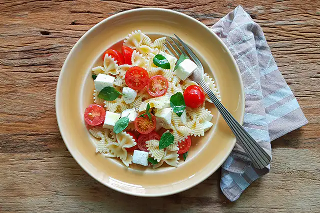

Macarrão caprese

Descrição
O trio tomate, muçarela de búfala e manjericão já é imbatível. Agora, quando esse trio encontra o macarrão, vira
quarteto fantástico. Prefira as massas curtas (como penne, farfalle, fusilli). E pode escolher se ele vai para a
mesa quente ou frio, como salada. Fica uma delícia de qualquer jeito.
Ingredientes
- 1 xícara (chá) de macarrão farfalle (ou outra massa curta de grano duro)
- 5 tomates-cereja
- ½ xícara (chá) de muçarela de búfala em cubos
- azeite a gosto
- folhas de manjericão a gosto
- sal e pimenta-do-reino moída na hora a gosto
Modo de preparo
- Leve uma panela média com água ao fogo alto. Quando, ferver misture ½ colher (sopa) de sal, coloque o
macarrão e deixe cozinhar pelo tempo indicado na embalagem ou até ficar “al dente”. Enquanto isso, prepare
os outros ingredientes.
- Lave e seque os tomates e as folhas de manjericão. Corte os tomates ao meio e transfira para uma tigela.
Junte os cubos de muçarela, as folhas de manjericão, tempere com azeite, sal e pimenta a gosto.
- Assim que estiver cozido, passe o macarrão por uma peneira e deixe escorrer bem a água. Junte o macarrão
ainda quente aos ingredientes da tigela, regue com mais um fio de azeite e misture delicadamente. Sirva a
seguir.
Versão salada
Esse prato também fica uma delícia servido frio. Depois de cozido, passe o macarrão sob água corrente para
esfriar. Junte aos outros ingredientes e acrescente vinagre de vinho tinto a gosto.
Fonte
Panelinha